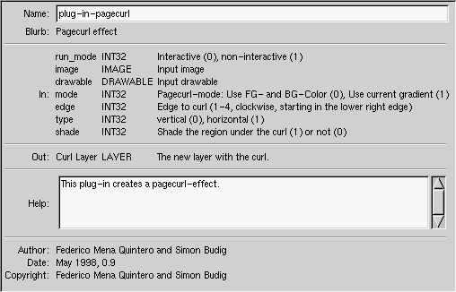

<simon@gimp.org>
One of the big advantages of The GIMP is the fact that it can be easily extended with new functionality. However, it is not easy to find documentation about this. I will cover the default scripting extension Script-Fu and some details for programming plug-ins in C. Although there are additional extensions for other languages (Gimp-Perl, Gimp-Python) I will not cover them here.
The PDB (Procedural DataBase) is the most important interface to access the image manipulation functions of The GIMP. The libgimp library provides some functions to call functions from the PDB or enter new functions into the PDB.
Each plug-in enters its functionality into the PDB, which enables it to be used by other plug-ins or scripts. The PDB also has information on the various parameters for each function.
Writing a binding for a programming language – for example Scheme or Perl – just requires mapping the PDB onto the syntax of the target language and providing access to the various parameter types. This is not a trivial task, but since libgimp is written in C and every reasonable target language provides a mechanism to access C-libraries it is not impossible. Some details (for example pixel-level manipulation of image data as in Gimp-Perl) need more attention.
A typical PDB entry contains this information (this is a screenshot of ):

You can see that a function can have different types of input and output parameters. In addition to types like INT, FLOAT and STRING and arrays of these, COLOR, IMAGE, DRAWABLE, LAYER and CHANNEL get used frequently. Layers and channels are both drawable types.
| Next | ||
| Scheme – An Overview |